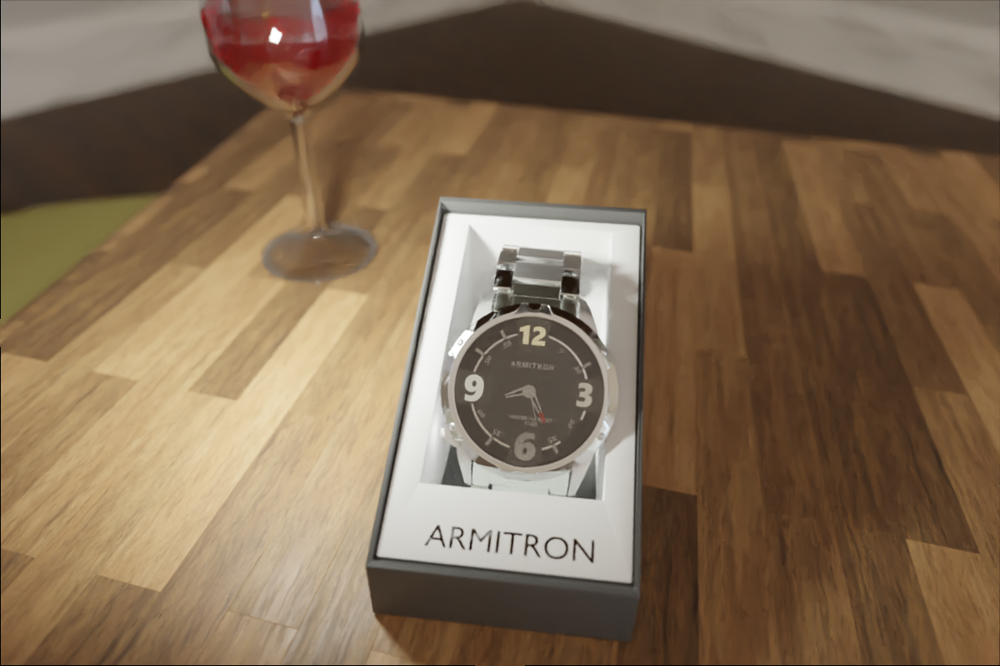

SIDDARTH CALIDAS AKA T3CHSTOP
I am a 16 year old software developer and 3D artist in San Diego, CA. My primary language
is Python and I also have
experience with full stack web development.
Academics
I have a 4.1111 GPA having taken many advanced courses including AP Chemistry and AP Calculus. I also am the president of an FTC robotics team and 3D animation club as well as many other academic accomplishments. I am currently a high school junior.
- 5 on both AP Calculus AB and AP Chemistry
- Classes I'm currently taking: AP computer science A(with Data structures 1-2), AP Physics 1, AP Calculus BC and AP Human geography
- President of FTC team 18568, 6:1. I dropped out of my schools robotics because I was unable to get any time to actually work on the robot. I started my own FTC team the next year, recruiting some friends to join. We all got to have significant contributions to the robot ourselves and managed to reach the regional competition.
- President of my School's 3D animation and game development club. We are an ASB recognized club, focused on giving our nearly 40 members experience with professional grade software. I learned a lot about collaborating with others, and being the president, I was responsible for making sure everyone worked at their own pace. We use blender and Unreal engine to create visually enticing games.
Projects
All my projects are on my github, but here are a few of my best
- Social Media Site. This is a work-in-progress social media site built on the Django python web development framework. This is a good example of my full-stack web development skills, as I had to write both the backend and frontend on my own
- This portfolio site. I wrote this static portfolio site from scratch using bootstrap to ensure that it would remain responsive and readable.
- FTC robotics java code Our robotics league utilizes java to build android applications that can send signals to the different components. These two scripts drove our robot during the 2020-2021 Ultimate Goal Season. I will include our programs for this upcoming season soon as well.
-
Watch render. I have experience with 3D modelling and rendering, and this is one of my renders. I
modeled my watch and textured completely using only blender. This tested my modeling and texturing
capabilities.
 -
Nature render. This render was challenging for me because of the intense number of vertices and
images, making it nearly impossible to render on my low end computer. Using various optimization
methods, I produced this render at 2 samples.

Skills
I have skills ranging from web development to robotics. Here is a list of my most valuable skills.
- Robotics. In my 6 years of FIRST robotics experience, I have learned a LOT about robotics. I have experience in circuits, construction, fabricating, software and CAD.
- Git/Github. I have experience with the basics of git such as pushing, pulling, branches and files like .gitignore or .gitattributes. I also know how to use github to make pull requests, raise issues or publish releases.
- Python. Python is my primary language, and I use it for most of my projects. I have a good knowledge of python syntax and how to use different modules.
- Java. I am learning Java in my AP computer science class, and I have experience with it in robotics. In my robotics, we use Java to build android applications to control the motors and sensors.
- HTML/CSS. I have a lot of experience with HTML and CSS through my 4 or so attempts at making a portfolio website from scratch. This is it, and showcases my skill of making static sites. I know how to use bootstrap to make responsive web pages and templates.
- Django. I am currently using the Django python web framework to build a social media website. I tie this in with HTML templates to build dynamic websites.
- Windows. My primary operating system, I am familiar with modifying system environment variables and using PowerShell.
- C. I am currently learning C so that I can make better contributions to Blender and the Linux kernel. I'll post some projects when I make something interesting.
Contact
You can reach me using my email, calidas.siddarth@gmail.com.